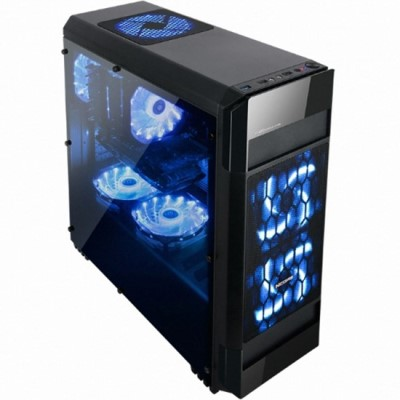

| 가상컴퓨터 |
|  |
| 목적 |
| 적당한 성능의 가성비 게임용 pc |
| 컴퓨터 부품 | 성능 | 가격 | 선정이유 |
| CPU | AMD 라이젠 7 2700X(피나클 릿지) | 어수 8 쓰레드수 16 베이스/부스트클럭3.7/4.3GHz
12nm공정 제작 언락 Yes
쿨링:Wraith Prism RGB LED | 최저가 348,480원 | 현재 게임의 추세가 다중코어(8코어 이상)를 지원 하는 게임이 앞으로 많이 나올것으로 예상되고 이미 지원하고 있는 게임들도 많이 있어 부품업그레이드를 하지않고 최대한 오래게임을 즐기기 위해 8코어 16쓰레드의 cpu로선정했고 성능이 비슷한 인텔의 제품과 가격차이가 많이 나 기 때문에 가성비적인 측면에서 라이젠 cpu를 선정 |
| 메인보드 | MSI B450M 박격포 | AM4 소켓을 사용한 프로세서 AMD B450 칩셋DDR4 메모리슬롯 4개,최대 64GB 지원 듀얼 채널 메모리 지원 2xM.2 slot,4xSATA 6GB/S 저장장치Realtek RTL 8111H-CG Gigabit LAN 컨트롤러 1개Realtek ALC892 CODEC 오디오 | 최저가 116,930원 | 메인보드는 실질적인 컴퓨터 성능에 큰 영향을 미치지 않음으로 AM4소켓을 사용하고 AMD와 호환이 되는메인보드중 전체적인 성능대비 가격대가 가장 좋은 B450M을 선택햇고 옛날에는 제조사에따라 성능,AS가사실 크게 차이낫지만 요즘은 큰차이가 없기 때문에후기가 가장 좋은 MSI B450M 박격포로 메인보드 선정. |
| 메모리 | 삼성전자 DDR4 8G PC4-21300(정품)x2 | 제품분류 DDR4 용량 8GB 사용장치 PC용방열판 미포함 패키지 1ea 메모리규격 Dimm288핀 2666Mhz 동작속도 | 5,1590원(개당) | MSI B450M 박격포 메인보드의 메모리종류가 DDR4이고,고사양 게임을 실행할 때 램 용량이 부족하지않게 하기위해 메모리 용량은 16GB,8GB 듀얼로 선택햇고메모리 제조사는 삼성께 가장 좋기 때문에삼성전자 DDR4 8G PC4-21300로 선정함 |
| 그래픽카드 | 이엠텍 HV 지포스 GTX1060 BLACKMONSTER OC D5X 6GB | NVIDIA 칩셋 지포스 GTX1060/16nm/1531MHz,부스트 174 7MH/1280개/PCLE3.0x16/메모리 종류GDDR5X(DDR5X)/8008MHz/메모리 용량6GB/메모리 버스192-bit/HDMI/DP/최대 모니터 4개/2개 팬/가로(길이)210mm/최대 120W/정격파워 500W 이상/전원부:5+1페이즈/2개 팬/가로(길이)210mm | 288,750원 | TX1060 6GB면 요즘 유행하는 웬만한 게임들을문제없이 플레이 할수 있고 제조사는 쿨러가 2개고 AS받기좋은 MSI로 선택함. |
| SSD | 삼성전자 860 EVO 250GB | 내장형SSD/디스크타입 2.5형(6.4cm)/인터페이서SATA3(6Gb/s)/디스크용량 250GB/메모리 타입TLC(토글)3D낸드구조/삼성 MJX/LPDDR4/512MB/최대 550MB/STRIM지원/GC 기능/S.M.A.R.T 지원/ECC 지원/DEVSLP지원/6.8MM/전용 소프트웨어 | 55,540원 | 믿고쓰는 삼성 860 EVO |
| 하드디스크 | Western Digital WD 2TB BLUE WD20EZRZ (SATA3/5400/64M)Western Digital WD 2TB BLUE WD20EZRZ (SATA3/5400/64M) | HDD(PC용)/8.9cm(3.5형)/SATA3(6Gb/s)/5400RPM /메모리 64MB/두께 26.1MM/소음(유휴/탐색)23/27db |
64,660원 | ata 규격의 하드디스크,1테라 용량의 가성비가별로여서 2TB로 선정.제조사는 가장 평이좋은 Western Digital로 선정함 |
| ODD | 구매하지않음 | 컴퓨터 조립 목적이 게임용 PC이기 때문에 ODD는구매할 필요가 없음. |
| 케이스 | ABKO NCORE 아수라 풀 아크릴 블랙 | 120mm 화이트 LED 팬 3개 기본 셋팅 120mm 듀얼 수냉킷 호환(전면부)시디롬 1개 설치 가능/VGA 최대 370mm 호환CPU 쿨러 최대 159mm 호환사이드 풀 아크릴 윈도우 적용/미끄러짐 방지 받침대상(마그넷 타입),하단 탈부착 먼지필터/전면 기본형 먼지필터(스폰지 타입),USB3.0 x1/USB2.0 x2 | 34,500원 | 가격대가 비싸지 않고 케이스는 규격만 맞으면디자인 취향 차이기 때문에 LED가 많고 예쁜 것으로 선정함. |
| 파워 | 마이크로닉스 ClassicII 600W +12V Single Rail 85+ | ATX파워/정격 600ㅈ/20핀+4핀/120MM팬/액티브PFC깊이 140mm/=12V 싱글레일/45A/4핀 IDE x4SATA x6/보조 8핀 커넥터/FDD 커넥터/대기전력 1W80PLUS/스탠다드 | 53,500원 | 그래픽카드의 권장전력이 500W 이상이기 때문에정격 600W인 파워를 선정햇다. |
| 운영체제 | 구매하지않음 | 윈도우 10은 학생에게 무료라 구입할 필요 없음 |
| 모니터 | 한성 Ultron 2767C 커브드 144 | 27인치/와이드(16:9)/PVA(곡면)/광시야각LED방식/1920 x 1080(FHD)/144Hz/HDMI*2DP포트/플리커 프리/블루라이트 차단/눈부심방지방향조절스탠드/틸트/게임모드 지원/조준선 표시 | 239,000원 | 너무큰걸 선호하지 않아서 27인치로 적당한 크기와 게이밍이 목적임으로 144주사율을 지원하고 곡면모니터이며 다른 144주사율을 지원하는 유명회사의 모니터에 비해 가격이 많이 저렴하여 선정. |
| 마우스 | 로지텍 G102 | 최대 8000DPI 1ms 보고율 85g | 최저 18,830원 | 옛날에 선풍적인 인기를 끌고 피시방에 보급되엇던 로지텍 g1 게이밍 마우스가 단종되고 로지텍 g1마우스와 그립감이 가장 유사하다고 평가되는 마우스이다. |
| 키보드 | COX CK700 라이트닝 카일 광축 | 수리가 용이한 교체축 방식,화려한 LED EFFECT체리식 스테빌라이저,폴링레이트 1000Hz한글 영문 이중사출 키캡,무한동시입력키,멀티미디어 핫키 | 28,900원 | 딱히 키보드에 큰 돈을 투자할 가치가 없다고 느껴 디자인만 보고 고름. |
| 호환성 테스트 |
| 호환성 문제없음. |
| 조립후기 |
| 조립 목적이 적당한 성능의 가정용 가성비 게임용 PC인만큼가격대비 성능도 만족스럽고 게임을 실행할 때 프레임드랍도크게 없으며 웬만한 요즘 나온 게임들을 돌리는데 문제가 없음. |
| 컴퓨터 조립 추천 사이트 | 이유 |
| 다나와(www.danawa.com) | 카테고리가 눈에 딱딱 들어오게 되어잇고 조립이 되어나오는 PC를 살수도 잇고 직접 견적을 맞출수도 있는데견적을 직접 맞추게 되면 각 부품마다 세부사항을 선택해서볼수도있고, 그제품의 후기,조립갤러리, 가격 등등 제조사를비교해가며 한눈에 보기 쉽고 견적을 다맞춘후 호환성 문의까지 할수 있음. |
| 출처 |
| NAVER지식in,www.danawa.com,www.shop.danawa.com |